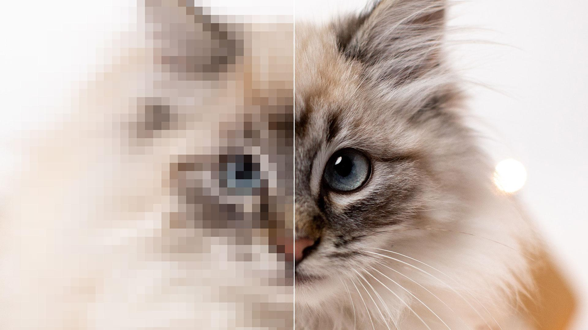

Dit systeem wordt gebruikt kleuren te maken met gebruik van een code. RGB's staan voor de volgende kleuren: rood, groen en blauw. Elke kleur kan je een bepaalde intensiteit geven. Deze sterkte varieert van 0 tot 255. 0 is geen kleur, en 255 is de volledige kleur. Deze 3 kleuren kunnen miljoenen andere kleuren maken. Zwart is basiskleur, en rood groen blauw zijn de kleurcomponenten. Het RGB-model kan je bijvoorbeeld terugvinden op de televisie of op je computer.

Dit systeem wordt gebruikt bij drukkerijen en dus niet op beeldschermen. CMY-K staan voor de volgende kleuren: cyaan, magenta, geel (yellow) en key (dit is zwart). Als je de eerste 3 kleuren samen mengt, krijg je geen zwart. CMYK heeft veel minder mogelijke kleuren.
 Als je heel veel zou inzoomen, dan zou je allemaal stippen zien. Dit noemen we pixels. Pixels zijn dus kleine, gekleurde punten die je scherm opbouwen (met het rgb model). Hoe meer pixels, hoe scherper je beeld is. Deze pixels kan je harder en minder hard laten branden, dit maakt dan ook de kleuren op je scherm. Hoe meer pixels, hoe scherper je beeld is. De resolutie van je scherm wordt weergegeven in het aantal pixels in de breedte X het aantal pixels in de hoogte. Op het plaatje zie je links een lage resolutie, en rechts een hogere resolutie.